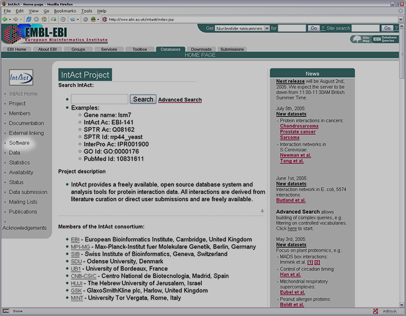
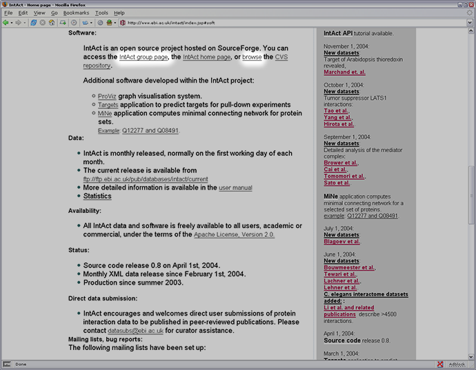
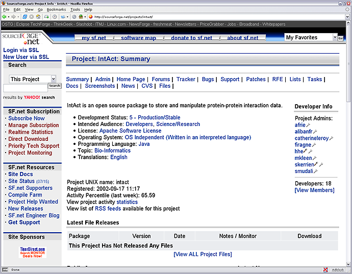
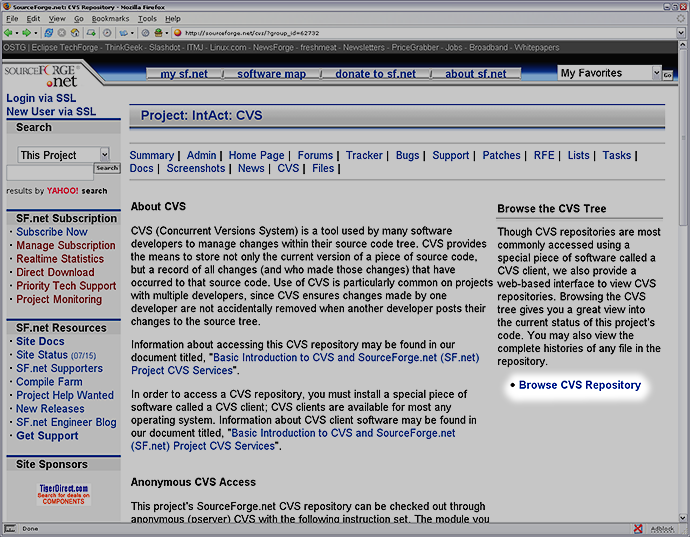
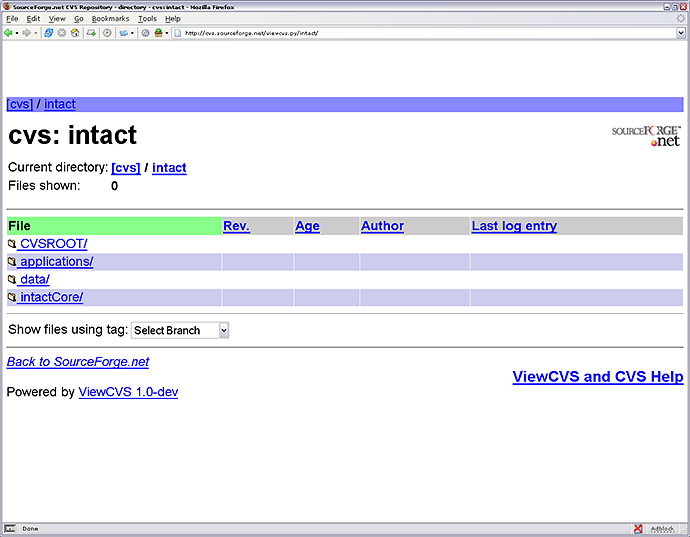
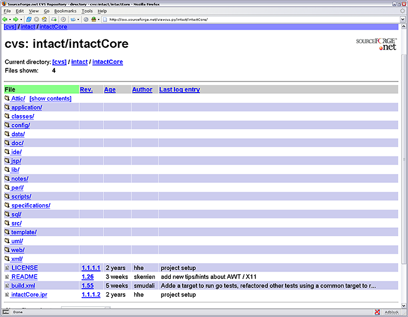
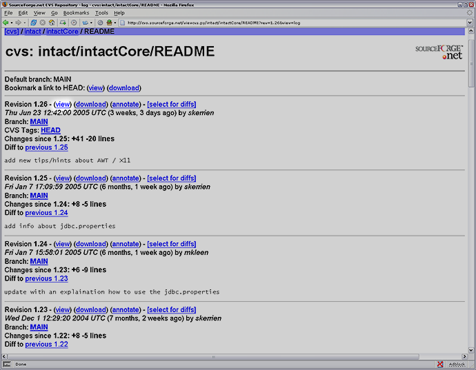
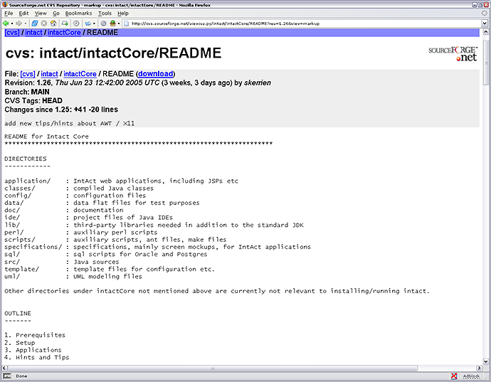

|
IntAct is an open-source project that is hosted on
SourceForge.net
and thus can be downloaded for free. This page will tell you how the programs can be downloaded for you to set-up a local IntAct database.
As shown below the IntAct homepage provides links to the relevant page on SourceForge.
[SourceForge is a repository for Open Source software and applications.]


The picture below shows the IntAct "homepage" on the SourceForge website.

To access the files that can be used to setup a remote IntAct database click on "Browse CVS Repository"

Below is a picture of the IntAct CVS Repository. CVS stand for Concurrent Version Systems which enables numerous versions of files to
be availiable with development annotation so users can view the advances of the software. For example, refer to the image that
shows the versions of the README, at the top is the most recent preceeded down the page by the previous versions.
(Click on the page below to go to the page shown)

Below are the directories that contain the installation files. However before downloading the entire lot read the README file as some
files maybe be specific to different operating systems.

The image below shows the various versions of the README with details on when it was last updated, how long ago, by whom and even
the number of changes. (Click on the page below to go to the page shown)

The README is a text document that can be viewed in the web-browser or downloaded and printed. It describes the contents of the various
directories and a thorough guide to setting up a local IntAct database.

|